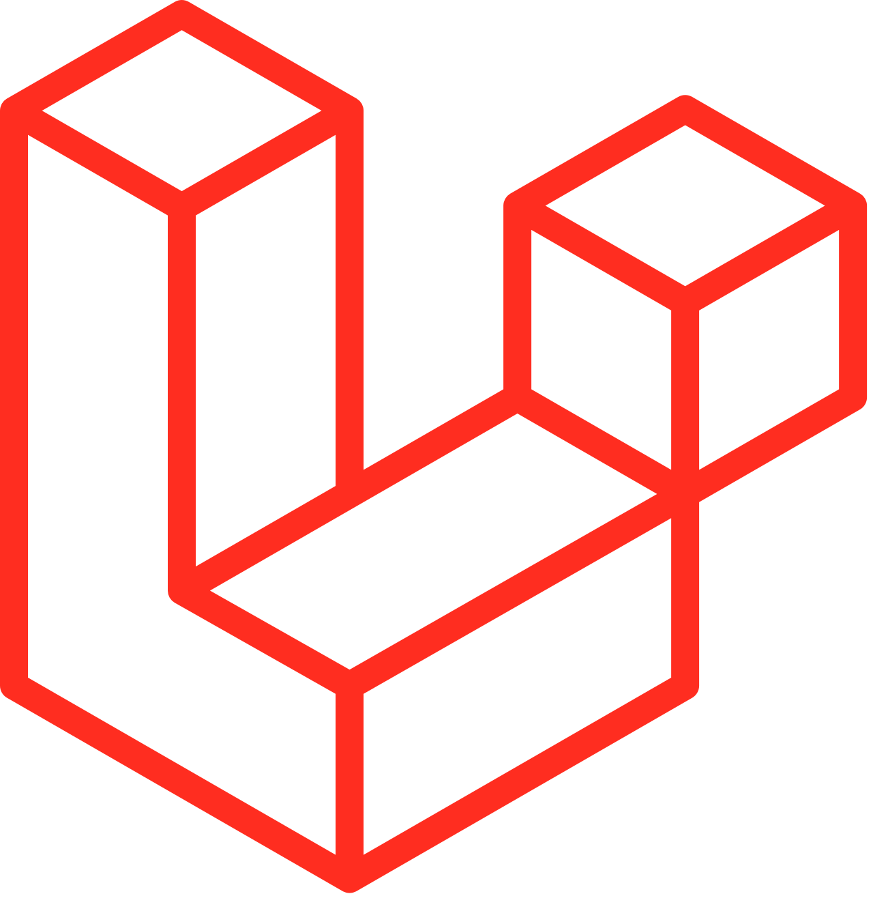

Nama Kamu Disini
Personal Branding & Tagline Kamu DisiniDisini bisa kamu tambahkan deskripsi, seperti pendidikan, proyek yang sedang dilakukan/dibuat, pengalaman kompetisi, dan lain-lain. ketertarikan kamu juga boleh di sini.
Keahlian
Beberapa tools dan teknologi yang paling sering dipakai sehari-hari.

LaravelSehari butuh berapa gelas kopi kalo lagi ngoding?
mungkin 4-6 gelas kopi tanpa gula :)